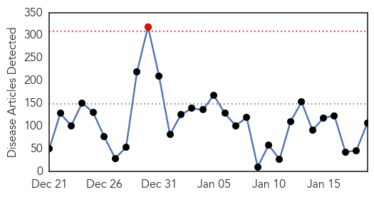
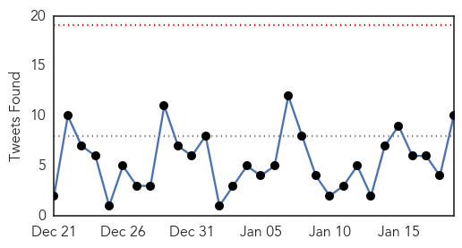
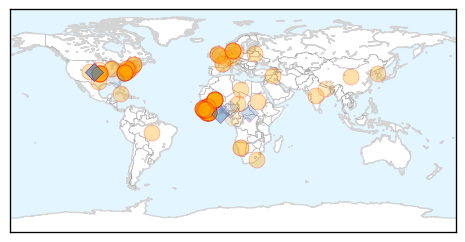
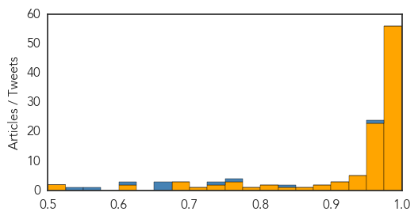

Measles
30-Day Web Trend
11 alerts, 3 warnings

30-Day Twitter Trend
0 alerts, 0 warnings

Article Locations

Article Confidences

Top Articles:
- 0.993
- Measles pops up in outbreak linked to Disney parks
- 0.988
- Outbreak in Ohio adds to 18-year high of measles cases in U.S.
- 0.982
- Measles Outbreak Now Reaches 51 Cases
- 0.979
- Measles case: Unvaccinated students barred from H.B. High till Jan. 29
- 0.972
- Measles outbreak spreading beyond Disney visitors
- 0.958
- Disneyland measles outbreak continues to spread
- 0.940
- 4 more suspected measles cases reported in San Diego County
- 0.933
- Vista clinic cleared of measles exposure
- 0.921
- Over 50 Cases Tallied; Disease Continues to Spread
- 0.914
- Study: Don’t delay measles vaccine
- 0.896
- Measles may have made its way to northwest Ohio
- 0.876
- Disney measles spreads across U.S. border, 52 confirmed cases
- 0.856
- Measles Outbreak Spreading In California, Other States
- 0.802
- Timeline: San Diego County Measles Cases
- 0.787
- Wealthy Anti-vaxxers Are Driving Outbreaks of Deadly 19th Century Diseases
- 0.720
- Third case of measles in Utah County totals 41 reported in four US states
- 0.660
- 3rd case of measles in Utah County linked to Disney visits
- 0.655
- Expanding Disneyland Measles Outbreak Fuels Vaccine Exemption Debate
- 0.592
- 26 measles cases reported with ties to Disney theme parks
- 0.585
- WHO Warns About Worsening Health Conditions in Ukraine
- 0.555
- Anti-vaccine parents found to stick together as their ranks grow
- 0.508
- Measles outbreak spreads, doctors blame lack of vaccinations
Top Tweets:
-
No tweets found for Jan 19, 2015
Ebola
30-Day Web Trend
1 alerts, 0 warnings

30-Day Twitter Trend
0 alerts, 0 warnings

Article Locations
Article Confidences
Top Articles:
- 1.000
- Latest Ebola News: Mali government, UN declare country Ebola-free
- 1.000
- Deputy Envoy Kumba Alice Momoh takes Ebola message to Spouses of African Ambassadors in PR China
- 1.000
- Mali declared Ebola-free as new cases decline in West Africa
- 1.000
- SA medical team ready for Ebola fight
- 1.000
- No More Ebola in One West African Country
- 1.000
- US Ebola Treatment Centers in Liberia Empty as Outbreak Wanes
- 0.999
- Ebola centres nearly empty as outbreak fades
- 0.999
- Ebola centres nearly empty as outbreak fades
- 0.999
- U.S.-built Ebola treatment centers open as outbreak fades
- 0.999
- Crisis Management
- 0.999
- U.S.-built Ebola centers in Liberia sit largely empty as epidemic subsides
- 0.999
- US-Built Ebola Treatment Centers Reportedly Sit Empty in Liberia
- 0.999
- Mali government declares country Ebola-free
- 0.999
- Liberia's US-Built Ebola Treatment Centers Stand Empty; Critics Say Response To Outbreak Came Too Late
- 0.999
- Mali’s health minister declares the West African country officially free of the deadly Ebola virus
- 0.999
- U.S.-built Ebola treatment centers in Liberia are nearly empty
- 0.999
- U.S.-built Ebola treatment centers open as outbreak fades
- 0.999
- The Ebola Blame Game: WHO Chastised, IMF Criticism Deflected
- 0.998
- Why reopening schools today in Ebola-hit Guinea isn't just about education
- 0.998
- Schools reopen in Ebola-hit Guinea; attendance 15%
- 0.998
- Ebola crisis: Guinea schools reopen after five-month closure
- 0.998
- US-built Ebola treatment centers reportedly sit empty in Liberia
- 0.998
- Schools reopening as West Africa turns page on Ebola epidemic
- 0.998
- Mali is officially free of Ebola
- 0.998
- Danish Prime Minister Will Visit West Africa
- 0.997
- SA role in Ebola vaccine clinical trial
- 0.997
- Schools reopening as W.Africa turns page on Ebola epidemic
- 0.997
- UK monitors two workers with potential exposure to Ebola
- 0.997
- Mali government declares country Ebola-free
- 0.996
- Rome responds to ebola • Wanted in Rome
- 0.996
- Mali Declared Ebola-Free
- 0.995
- How a ‘Czar’ Fights a Disease
- 0.995
- SA medical team ready for Ebola fight
- 0.995
- WHO Ebola situation report: Liberia records highest deaths
- 0.995
- Bainbridge police to get Ebola suits
- 0.994
- Sick Airline Passenger Flying From Sierra Leone Taken to Hospital
- 0.993
- WHO, Mali government declare country Ebola-free
- 0.992
- Thorning to visit Ebola workers in Sierra Leone
- 0.992
- N.J. airline passenger treated for Ebola symptoms: hospital
- 0.992
- SA nurses fearless as they face Ebola
- 0.991
- SA medics ready for Ebola fight - Africa
- 0.990
- US-built Ebola treatment centres now mostly empty as the outbreak fades
- 0.985
- Sierra Leone News : Post-Ebola Rebuilding Is Bigger Than That of the War
- 0.985
- U.S.-built Ebola treatment centers in Liberia are nearly empty as outbreak fades
- 0.985
- Thorning-Schmidt to visit Ebola fighters in Sierra Leone
- 0.982
- Ebola fading out of Liberia, treatment centers getting emptier
- 0.981
- SA nurses fearless as they face Ebola
- 0.981
- Ebola scare on Newark flight as CDC holds passengers on plane
- 0.980
- Miscommunication keeps Guinea students from Ebola-free schools
- 0.980
- Pugh among first lady's State of the Union guests
Showing top 50 articles...
Top Tweets:
- 0.942
- RT: Number of new cases of Ebola in West Africa is falling: http://t.co/RjPZIDLecb AfricaAgainstEbola africastopebola Ebola…
- 0.939
- Ebola Update: 21,373 confirmed, probable & suspected cases in 3 most affected countries, with 8,468 deaths. EbolaResponse
- 0.899
- RT: Sierra Leone MOH Ebola Update Jan 19: 20 New Conf. Cases & 14 Susp.; 13 New Conf. Deaths https://t.co/HDqK5zc2Z4
- 0.839
- Ebola Cases and Health System Demand in Liberia. Could epidemic end in 2015? @plosbiology http://t.co/iOm1kJ3WFm
- 0.795
- RT: Sierra Leone MOH Ebola Update Jan 18th - 12 New Conf. Cases & 8 Susp; 7 New Conf. Fatalities https://t.co/kVG30RBouo
- 0.788
- U.S.-built Ebola treatment centers in Liberia are nearly empty as outbreak fades http://t.co/8xE85IHO3u
- 0.754
- RT: Liberia found 14 EbolaCases 1-14Jan, but CDC reports 313, labling all suspected as Ebola(but 95% had other infectons) http…
- 0.702
- CNN: Ebola slowing in Liberia http://t.co/93XfYBKKv6 Ebola EbolaResponse http://t.co/CSQihwR101
- 0.670
- RT: Ebola "under control" = 42 days with 0 cases. Liberia now = 1 case/day. A skilled team keeps pushing the curve down! http:…
- 0.667
- RT: Saluons la fin d'Ebola au Mali. Félicitations au gouvernement, partenaires et. Surtout pas de place pour la co…
- 0.639
- New Ebola cases declined by 43 percent in Sierra Leone between Dec 22 and Jan 5 http://t.co/XVucv59D6o
- 0.632
- RT: RT: "Encouraging" statistics from Liberia's Ministry of Health on Ebola EbolaResponse http://t.co/Vl…
- 0.632
- RT: RT: "Encouraging" statistics from Liberia's Ministry of Health on Ebola EbolaResponse http://t.co/Vl…
- 0.614
- Tragic: Cuban nurse fighting Ebola in Sierra Leone contracts and dies from malaria. http://t.co/XwwKt4pM5a
- 0.593
- RT: New Ebola cases declined by 43 percent in Sierra Leone between Dec 22 and Jan 5 http://t.co/XVucv59D6o
- 0.586
- RT: Ebola: le Mali est sorti de l'épidémie, la Guinée rouvre ses écoles http://t.co/rycM48Q4da AFP
- 0.550
- What were biggest challenges about working in W Africa to fight Ebola? Ask DiseaseDetective Karlyn in CDC Facebook Q&A 1/21 2PM ET.
- 0.516
- RT: The govt of Mali & WHO announced the end of Ebola outbreak in Mali http://t.co/qvmDxHTjvt